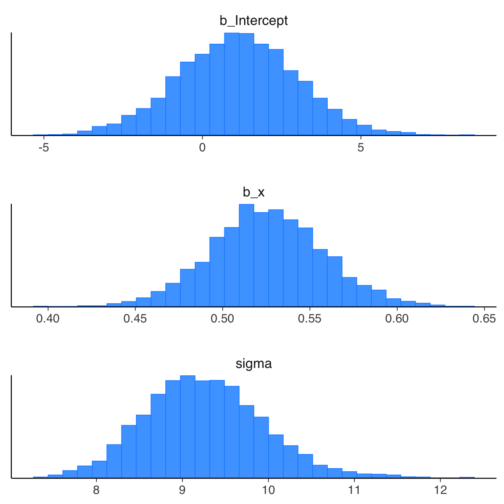
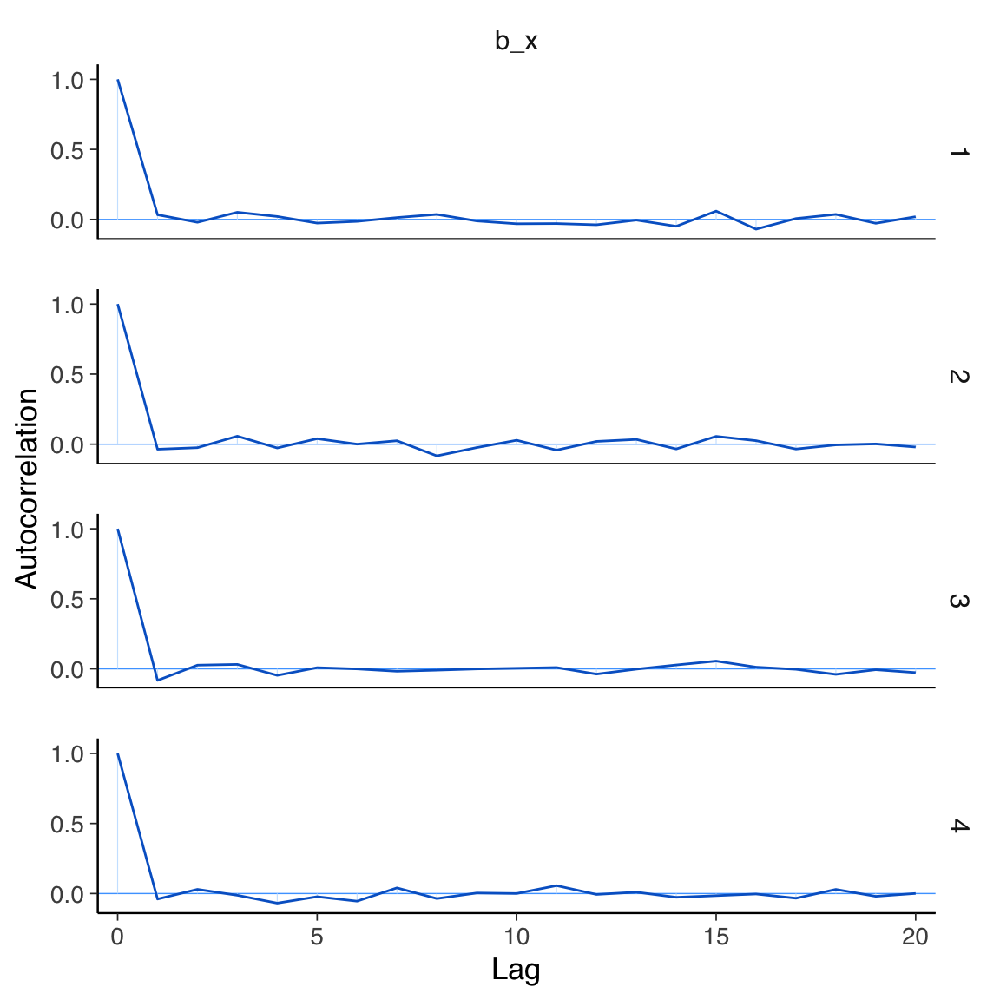

here::here("code", "_common.R") |>
source()
# Load packages
if (!requireNamespace("pacman")) install.packages("pacman")
pacman::p_load(cmdstanr, posterior, see, brms)60 Modello bayesiano di regressione lineare bivariata
In questo capitolo imparerai a:
- Comprendere il modello di regressione bayesiano e come si differenzia dall’approccio frequentista.
- Interpretare i parametri stimati in un contesto bayesiano e confrontarli con quelli frequentisti.
- Familiarizzare con l’uso di brms nella regressione.
- Interpretare le previsioni del modello bayesiano e le verifiche predittive a posteriori.
Prerequisiti
- Leggere il capitolo Simple Normal Regression di Johnson et al. (2022).
- Consultare Regression and Other Stories (Gelman et al., 2021).
- Il pdf del libro è consultabile gratuitamente su questo sito.
- Prestare particolare attenzione ai capitoli 1 “Overeview, 6,”Background on Regression Modeling,†7, “Linear Regression with a Single Predictor†e 8, “Fitting regression models”, che offrono una guida dettagliata al modello di regressione bivariato da una prospettiva bayesiana.
- Per utilizzare il pacchetto R brms, è necessario installare preliminarmente Stan o CmdStan sul proprio computer. Si consiglia di optare per CmdStan. Il metodo più semplice per installare CmdStan consiste nell’installare il pacchetto R cmdstanr e seguire le istruzioni fornite nella documentazione.
Preparazione del Notebook
60.1 Introduzione
In questa sezione della dispensa, esploreremo il modello di regressione lineare bivariata bayesiano, confrontandolo con l’approccio frequentista.
60.1.1 Modello di Regressione Bayesiano
L’approccio bayesiano si distingue dai metodi dei minimi quadrati o della massima verosimiglianza, poiché combina le informazioni derivanti dai dati con conoscenze preesistenti, rappresentate da distribuzioni a priori. Questo processo produce distribuzioni a posteriori che aggiornano le credenze iniziali dopo l’osservazione dei dati, superando i limiti delle stime puntuali dei metodi classici.
Nel contesto di un modello lineare bayesiano, indichiamo con \(y\) la variabile di risposta, con \(x\) le variabili predittive, e con \(i\) l’indice delle osservazioni, da 1 al numero totale di dati.
60.1.2 Verosimiglianza
Nel modello bayesiano bivariato, la relazione tra la variabile \(y\) e la variabile \(x\) è descritta dalla verosimiglianza:
\[ y \sim \text{Normale}(\alpha + \beta x, \sigma). \]
Ciò implica che i valori osservati di \(y\) sono distribuiti attorno alla retta di regressione \(\alpha + \beta x\), con una deviazione standard \(\sigma\). Ogni osservazione è quindi una combinazione lineare dell’intercetta \(\alpha\), del coefficiente \(\beta\) che moltiplica la variabile predittiva, e di un termine di errore distribuito normalmente.
60.1.3 Distribuzioni a Priori
Per definire il modello bayesiano, si specificano distribuzioni a priori per i parametri \(\alpha\), \(\beta\) e \(\sigma\). Sebbene siano possibili prior uniformi, che esprimono una totale assenza di conoscenza iniziale, è preferibile adottare prior debolmente informativi per garantire maggiore robustezza. Per esempio:
\[ \alpha \sim \mathcal{N}(0, 2.5), \quad \beta \sim \mathcal{N}(0, 2.5), \quad \sigma \sim \text{Cauchy}(0, 2.5). \]
Queste distribuzioni riflettono ipotesi iniziali ragionevoli senza introdurre eccessiva informazione a priori.
60.1.4 Distribuzioni a Posteriori
Le distribuzioni a posteriori sono ottenute combinando la verosimiglianza dei dati con le distribuzioni a priori tramite il teorema di Bayes. Esse rappresentano lo stato aggiornato delle conoscenze sui parametri, integrando l’informazione empirica con le ipotesi iniziali. L’approccio bayesiano non si limita a fornire stime puntuali, ma restituisce una descrizione completa dell’incertezza associata ai parametri sotto forma di distribuzioni probabilistiche.
Nel contesto di un modello di regressione bivariata, le distribuzioni a posteriori dei parametri \(\alpha\) (intercetta), \(\beta\) (coefficiente angolare), e \(\sigma\) (deviazione standard residua) vengono stimate utilizzando algoritmi MCMC (Markov Chain Monte Carlo). Questi algoritmi consentono di campionare iterativamente dalle distribuzioni a posteriori, garantendo una stima accurata anche in modelli complessi.
Nella sezione successiva, esploreremo come utilizzare la funzione brm() del pacchetto brms per implementare un modello di regressione bayesiano e ottenere le stime a posteriori, analizzandone le proprietà e le implicazioni.
60.2 Adattare una Retta di Regressione a Dati Simulati
Definiamo i parametri e simuliamo i dati.
set.seed(123)
# Definizione delle variabili
x <- 1:100
n <- length(x)
a <- 1.5
b <- 0.5
sigma <- 10
# Generazione di y
y <- a + b * x + rnorm(n, 0, sigma)
# Creazione del dataframe
fake <- tibble(x = x, y = y)
head(fake)
#> # A tibble: 6 × 2
#> x y
#> <int> <dbl>
#> 1 1 -3.60
#> 2 2 0.198
#> 3 3 18.6
#> 4 4 4.21
#> 5 5 5.29
#> 6 6 21.7Iniziamo adattando ai dati un modello frequentista:
fm1 <- lm(y ~ x, data = fake)summary(fm1)
#>
#> Call:
#> lm(formula = y ~ x, data = fake)
#>
#> Residuals:
#> Min 1Q Median 3Q Max
#> -24.536 -5.524 -0.346 6.485 20.949
#>
#> Coefficients:
#> Estimate Std. Error t value Pr(>|t|)
#> (Intercept) 1.1360 1.8429 0.62 0.54
#> x 0.5251 0.0317 16.57 <2e-16
#>
#> Residual standard error: 9.15 on 98 degrees of freedom
#> Multiple R-squared: 0.737, Adjusted R-squared: 0.734
#> F-statistic: 275 on 1 and 98 DF, p-value: <2e-16Per ottenere l’intervallo di confidenza (nel senso frequentista) della stima dei parametri usiamo:
confint(fm1, level = 0.95)
#> 2.5 % 97.5 %
#> (Intercept) -2.521 4.793
#> x 0.462 0.588Adattiamo ora ai dati un modello di regressione bayesiano utilizzando brms. Si noti che, anche in questo caso, usiamo la sintassi di Wilkinson y ~ x, come per lm(). Eseguiamo il campionamento:
fm2 <- brm(
y ~ x,
data = fake,
backend = "cmdstanr"
)Come discusso nell’analisi dell’algoritmo di Metropolis, il primo passo è esaminare le tracce dei parametri per verificare la convergenza dell’algoritmo. La convergenza può essere considerata raggiunta se le catene (nel caso di brm, sono 4 per impostazione predefinita) risultano ben mescolate. Questo si manifesta in un trace plot che mostra una distribuzione uniforme e casuale dei campioni attorno a un valore centrale, senza pattern evidenti o tendenze sistematiche.
Le tracce dei parametri si ottengono nel modo seguente:
Gli istogrammi delle distribuzioni a posteriori dei parametri si generano nel modo seguente:
mcmc_hist(
fm2,
pars =c("b_Intercept", "b_x", "sigma"),
facet_args = list(nrow = 3)
)
#> `stat_bin()` using `bins = 30`. Pick better value with `binwidth`.
Per valutare l’autocorrelazione tra i campioni a posteriori del parametro beta, possiamo utilizzare il seguente comando:
mcmc_acf(fm2, "b_x")
L’autocorrelazione fornisce informazioni sulla dipendenza tra campioni successivi nella catena di Markov. È normale che i campioni successivi non siano completamente indipendenti, poiché le catene di Markov generano campioni correlati per costruzione. Tuttavia, se l’algoritmo ha raggiunto la convergenza, l’autocorrelazione dovrebbe diminuire rapidamente e diventare trascurabile dopo un numero relativamente piccolo di lag. Questo significa che, dopo un certo numero di passi, i campioni diventano progressivamente meno correlati tra loro, comportandosi in modo simile a campioni indipendenti estratti dalla distribuzione target.
Un’elevata autocorrelazione su lag più lunghi potrebbe invece indicare problemi di mescolamento delle catene o una mancata convergenza, richiedendo ulteriori verifiche o aggiustamenti, come l’aumento del numero di iterazioni o una diversa parametrizzazione del modello.
Nel caso presente, notiamo una rapida diminuzione dell’autocorrelazione in funzione del numero di passi. Ciò è indicativo del fatto che la convergenza è stata raggiunta.
Una sintesi numerica dei risultati si trova nel modo seguente:
summary(fm2)
#> Family: gaussian
#> Links: mu = identity; sigma = identity
#> Formula: y ~ x
#> Data: fake (Number of observations: 100)
#> Draws: 4 chains, each with iter = 2000; warmup = 1000; thin = 1;
#> total post-warmup draws = 4000
#>
#> Regression Coefficients:
#> Estimate Est.Error l-95% CI u-95% CI Rhat Bulk_ESS Tail_ESS
#> Intercept 1.14 1.84 -2.44 4.79 1.00 3775 2784
#> x 0.53 0.03 0.46 0.59 1.00 4041 3082
#>
#> Further Distributional Parameters:
#> Estimate Est.Error l-95% CI u-95% CI Rhat Bulk_ESS Tail_ESS
#> sigma 9.25 0.65 8.07 10.63 1.00 3963 2940
#>
#> Draws were sampled using sample(hmc). For each parameter, Bulk_ESS
#> and Tail_ESS are effective sample size measures, and Rhat is the potential
#> scale reduction factor on split chains (at convergence, Rhat = 1).Confrontiamo le stime ottenute con i valori reali dei parametri simulati. L’intercetta è stata stimata attorno a 1.14, con un’incertezza al 95% che varia tra -2.4 e 4.8. Questo risultato rientra negli intervalli di credibilità previsti, confermando l’accuratezza del modello. Analogamente, per la pendenza \(b\), l’intervallo di credibilità al 95% include il valore reale simulato, dimostrando come le stime bayesiane riflettano accuratamente l’incertezza sui parametri.
Se si utilizza la funzione conditional_effects() viene prodotto un grafico che rappresenta la relazione stimata tra il predittore \(x\) e la variabile di risposta \(y\).
conditional_effects(fm2) |>
plot(points = TRUE)-
Linea stimata (effetto medio):
- La linea centrale del grafico rappresenta il valore medio previsto di\(y\) per ogni valore di\(x\), dato dalla relazione\(y = \alpha + \beta x\).
- Questa linea è calcolata usando i valori medi a posteriori stimati per\(\alpha\) e\(\beta\).
-
Bande di incertezza (intervalli di credibilità ):
- Le bande attorno alla linea rappresentano gli intervalli di credibilità (ad esempio, al 95%). Questi mostrano l’incertezza associata alle stime del modello per ogni valore di\(x\).
- Più strette sono le bande, maggiore è la certezza del modello riguardo alla relazione stimata.
-
Dati osservati:
- I punti rappresentano i valori effettivi di\(y\) osservati nei dati. Questo consente di confrontare visivamente come i dati reali si allineano con le previsioni del modello.
Il grafico consente
- una verifica visiva della relazione stimata tra\(y\) e\(x\);
- di identificazione di eventuali discrepanze tra i dati osservati e le previsioni del modello;
- una rappresentazione dell’incertezza nelle stime.
Ad esempio, il grafico può mostrare se\(x\) ha un effetto credibile su\(y\) e con quale livello di incertezza. Se l’effetto di\(x\) è debole o nullo, la linea stimata sarà piatta (vicina a zero) e le bande di incertezza saranno ampie.
60.3 Simulazione di Livelli di Copertura
Verifichiamo la copertura degli intervalli di credibilità al 95% attraverso simulazioni ripetute.
set.seed(42)
# Parametri veri
a_true <- 0.2
b_true <- 0.3
sigma_true <- 0.5
# Numero di simulazioni
num_simulations <- 1000
# Conteggio delle coperture
coverage_a <- 0
coverage_b <- 0
for (i in 1:num_simulations) {
# Generazione dei dati
x <- 1:20
y <- a_true + b_true * x + sigma_true * rnorm(length(x))
# Adattamento del modello
fit <- lm(y ~ x)
ci <- confint(fit) # Intervalli di confidenza
# Verifica delle coperture
if (ci[1,1] <= a_true & ci[1, 2] >= a_true) {
coverage_a <- coverage_a + 1
}
if (ci[2,1] <= b_true & ci[2, 2] >= b_true) {
coverage_b <- coverage_b + 1
}
}I risultati indicano che i livelli di copertura empirici ottenuti con l’approccio frequentista corrispondono strettamente ai livelli teorici attesi.
Per proseguire, ripeteremo la simulazione adottando un approccio bayesiano. Useremo la funzione brm() del pacchetto brms al posto di lm().
#| message: false
#| warning: false
#| output: false
#|
# Definizione dei parametri
set.seed(23)
n_fake <- 1000
cover_68 <- rep(NA, n_fake)
cover_95 <- rep(NA, n_fake)
a <- 0.2 # Intercetta vera
b <- 0.3 # Pendenza vera
sigma <- 0.5 # Deviazione standard vera
x <- 1:20 # Variabile indipendente
n <- length(x) # Numero di osservazioni
# Ciclo per simulazioni
for (s in 1:n_fake) {
# Generazione dei dati
y <- a + b * x + rnorm(n, 0, sigma)
fake <- data.frame(x = x, y = y)
# Adattamento del modello con brms
fit <- brm(
bf(y ~ 1 + x, center = FALSE),
data = fake,
family = gaussian(),
prior = c(
prior(normal(0, 2.5), class = "b", coef = "Intercept"), # Prior per alpha
prior(normal(0, 2.5), class = "b", coef = "x"), # Prior per beta
prior(cauchy(0, 2.5), class = "sigma") # Prior per sigma
),
seed = 42,
iter = 2000,
chains = 2,
refresh = 0, # Suppress console output
backend = "cmdstanr"
)
# Estrazione dei coefficienti stimati e delle deviazioni standard
posterior_summary <- summary(fit)$fixed
b_hat <- posterior_summary["x", "Estimate"]
b_se <- posterior_summary["x", "Est.Error"]
# Calcolo della copertura
cover_68[s] <- abs(b - b_hat) < b_se
cover_95[s] <- abs(b - b_hat) < 2 * b_se
}# Summarize the coverage results
mean_cover_68 <- mean(cover_68, na.rm = TRUE)
mean_cover_95 <- mean(cover_95, na.rm = TRUE)
cat("Coverage for 68% interval:", mean_cover_68, "\n")
cat("Coverage for 95% interval:", mean_cover_95, "\n")Questa seconda simulazione evidenzia che anche i livelli di copertura empirici ottenuti con l’approccio bayesiano si avvicinano ai valori teorici previsti.
I risultati ottenuti confermano l’efficacia degli intervalli di confidenza e di credibilità stimati attraverso i modelli frequentisti e bayesiani.
60.4 Confronti, non Effetti
Gelman et al. (2021) sottolineano che i coefficienti di regressione sono spesso denominati “effetti”, ma questa terminologia può trarre in inganno. Gli “effetti”, infatti, implicano una relazione causale. Tuttavia, ciò che un modello di regressione stima non è necessariamente un effetto causale, ma piuttosto un pattern osservazionale. In particolare, ciò che osserviamo è che la media della variabile dipendente nella sottopopolazione con \(X = x + 1\) è spesso maggiore o minore (a seconda del segno di \(\beta\)) rispetto alla media della sottopopolazione con \(X = x\).
La regressione è uno strumento matematico utilizzato principalmente per fare previsioni. I coefficienti di regressione devono quindi essere interpretati come confronti medi. Solo in circostanze specifiche, quando la regressione descrive un processo causale ben definito, è possibile interpretarli come effetti. Tuttavia, questa interpretazione causale deve essere giustificata dal disegno dello studio e non può essere dedotta unicamente dall’uso del modello statistico.
60.5 Riflessioni Conclusive
In questo capitolo abbiamo adottato un approccio bayesiano per stimare i parametri di un modello di regressione bivariato. È emerso che, quando i prior sono debolmente informativi, le stime bayesiane tendono a coincidere con quelle ottenute tramite l’approccio frequentista. Tuttavia, il valore dell’approccio bayesiano risiede non solo nella stima dei parametri, ma anche nella possibilità di incorporare conoscenze a priori e di rappresentare esplicitamente l’incertezza nelle stime.
Al di là della scelta tra approccio frequentista e bayesiano, è cruciale riflettere sul ruolo dei modelli statistici nella ricerca scientifica, in particolare nel contesto psicologico. Come evidenziato da Alexander (2023), i modelli statistici non sono strumenti per rivelare una verità assoluta, ma mezzi per interpretare i dati e costruire significato a partire da essi. Essi non rappresentano la realtà in modo fedele, ma piuttosto funzionano come “lenti†attraverso le quali possiamo mettere a fuoco aspetti specifici del fenomeno studiato.
I modelli statistici possono essere utilizzati principalmente per due scopi distinti ma complementari: inferenza e previsione.
Previsione: mira a descrivere le associazioni tra variabili, consentendo di formulare stime future basate sui dati disponibili. È un processo empirico, in cui la bontà del modello viene valutata sulla sua capacità di fare previsioni accurate.
Inferenza: si concentra sull’individuazione di relazioni causali tra variabili. Questo tipo di analisi richiede una progettazione rigorosa, come esperimenti controllati o disegni quasi-sperimentali, e una chiara giustificazione delle ipotesi del modello. La regressione, in particolare, può supportare inferenze causali solo se accompagnata da un contesto teorico robusto e da dati appropriati.
È fondamentale ricordare che la regressione rappresenta una forma di media ponderata e, di conseguenza, i suoi risultati possono essere influenzati da bias intrinseci e dalle caratteristiche specifiche del dataset. Pertanto:
- La qualità dei risultati dipende dalla qualità dei dati e dalla correttezza delle ipotesi del modello.
- È importante considerare potenziali fonti di bias, come la selezione dei dati, variabili confondenti non incluse nel modello, o ipotesi non verificate sulla linearità delle relazioni.
In conclusione, l’adozione di un modello statistico non è un fine in sé, ma uno strumento per esplorare, interpretare e comprendere il fenomeno di interesse. Sia che si utilizzi un approccio bayesiano o frequentista, il successo dell’analisi dipende dalla capacità di integrare i risultati quantitativi con una riflessione teorica critica e da un’attenzione costante alla validità delle ipotesi e delle conclusioni.
60.6 Come installare CmdStan
Assicurati di aver installato l’ultima versione di R. Se non lo hai già fatto, scarica e installa la versione più recente seguendo le istruzioni disponibili su https://www.r-project.org/.
CmdStanR è un’interfaccia leggera per utilizzare Stan con R.
Installa il pacchetto cmdstanr seguendo le istruzioni disponibili nella guida Getting Started with CmdStanR.
Verifica che il tuo toolchain (gli strumenti di compilazione necessari) sia configurato correttamente eseguendo:
check_cmdstan_toolchain()Su macOS e Linux, questa configurazione dovrebbe essere già pronta di default.
- Procedi con l’installazione di CmdStan utilizzando il comando seguente (specificando il numero di core da utilizzare per la compilazione, ad esempio
cores = 2):
install_cmdstan(cores = 2)60.6.1 Windows
Su Windows è necessario installare RTools e configurare PATH:
-
Installazione di RTools:
- Vai su https://cran.r-project.org/bin/windows/Rtools/
- Scarica la versione di RTools compatibile con la tua versione di R (Generalmente, RTools 4.3 per R 4.3.x, RTools 4.2 per R 4.2.x, etc.)
- Esegui l’installer scaricato
- IMPORTANTE: Durante l’installazione, seleziona la casella “Add rtools to system PATH”
-
Verifica dell’installazione e configurazione del PATH:
- Apri PowerShell o Command Prompt
- Verifica se RTools è nel PATH digitando:
gcc --versionSe vedi la versione di gcc, RTools è nel PATH.
-
Se RTools non è nel PATH, devi aggiungerlo manualmente:
Cerca “Impostazioni di Sistema†in Windows
Clicca su “Impostazioni di sistema avanzate”
Clicca su “Variabili d’ambiente”
Nella sezione “Variabili di sistema”, trova “Path”
Clicca “Modifica”
-
Clicca “Nuovo†e aggiungi questi percorsi (sostituisci X.X con la tua versione di RTools):
C:\rtools4X\mingw64\bin C:\rtools4X\usr\bin
-
Verifica finale:
- Chiudi e riapri il terminale
- Prova questi comandi:
gcc --version make --versionSe entrambi i comandi mostrano le versioni, l’installazione è completa.
-
Test in R:
- Apri R o RStudio
- Esegui:
Sys.which("make")Dovrebbe mostrare il percorso di make.
Problemi comuni:
- Se i comandi non vengono riconosciuti dopo aver aggiunto il PATH, prova a riavviare il computer.
- Se usi RStudio, potrebbe essere necessario riavviarlo dopo aver modificato il PATH.
Informazioni sull’Ambiente di Sviluppo
sessionInfo()
#> R version 4.4.2 (2024-10-31)
#> Platform: aarch64-apple-darwin20
#> Running under: macOS Sequoia 15.2
#>
#> Matrix products: default
#> BLAS: /Library/Frameworks/R.framework/Versions/4.4-arm64/Resources/lib/libRblas.0.dylib
#> LAPACK: /Library/Frameworks/R.framework/Versions/4.4-arm64/Resources/lib/libRlapack.dylib; LAPACK version 3.12.0
#>
#> locale:
#> [1] C/UTF-8/C/C/C/C
#>
#> time zone: Europe/Rome
#> tzcode source: internal
#>
#> attached base packages:
#> [1] stats graphics grDevices utils datasets methods base
#>
#> other attached packages:
#> [1] rstan_2.32.6 StanHeaders_2.32.10 brms_2.22.8
#> [4] Rcpp_1.0.13-1 posterior_1.6.0 cmdstanr_0.8.1.9000
#> [7] see_0.9.0 gridExtra_2.3 patchwork_1.3.0
#> [10] bayesplot_1.11.1 psych_2.4.12 scales_1.3.0
#> [13] markdown_1.13 knitr_1.49 lubridate_1.9.4
#> [16] forcats_1.0.0 stringr_1.5.1 dplyr_1.1.4
#> [19] purrr_1.0.2 readr_2.1.5 tidyr_1.3.1
#> [22] tibble_3.2.1 ggplot2_3.5.1 tidyverse_2.0.0
#> [25] rio_1.2.3 here_1.0.1
#>
#> loaded via a namespace (and not attached):
#> [1] tidyselect_1.2.1 farver_2.1.2 loo_2.8.0
#> [4] fastmap_1.2.0 TH.data_1.1-2 tensorA_0.36.2.1
#> [7] pacman_0.5.1 digest_0.6.37 timechange_0.3.0
#> [10] estimability_1.5.1 lifecycle_1.0.4 survival_3.8-3
#> [13] processx_3.8.4 magrittr_2.0.3 compiler_4.4.2
#> [16] rlang_1.1.4 tools_4.4.2 yaml_2.3.10
#> [19] data.table_1.16.4 labeling_0.4.3 bridgesampling_1.1-2
#> [22] htmlwidgets_1.6.4 curl_6.0.1 pkgbuild_1.4.5
#> [25] mnormt_2.1.1 plyr_1.8.9 abind_1.4-8
#> [28] multcomp_1.4-26 withr_3.0.2 stats4_4.4.2
#> [31] grid_4.4.2 inline_0.3.20 xtable_1.8-4
#> [34] colorspace_2.1-1 emmeans_1.10.6 MASS_7.3-61
#> [37] cli_3.6.3 mvtnorm_1.3-2 rmarkdown_2.29
#> [40] generics_0.1.3 RcppParallel_5.1.9 reshape2_1.4.4
#> [43] tzdb_0.4.0 splines_4.4.2 parallel_4.4.2
#> [46] matrixStats_1.4.1 vctrs_0.6.5 V8_6.0.0
#> [49] Matrix_1.7-1 sandwich_3.1-1 jsonlite_1.8.9
#> [52] hms_1.1.3 glue_1.8.0 codetools_0.2-20
#> [55] ps_1.8.1 distributional_0.5.0 stringi_1.8.4
#> [58] gtable_0.3.6 QuickJSR_1.4.0 munsell_0.5.1
#> [61] pillar_1.10.0 htmltools_0.5.8.1 Brobdingnag_1.2-9
#> [64] R6_2.5.1 rprojroot_2.0.4 evaluate_1.0.1
#> [67] lattice_0.22-6 backports_1.5.0 rstantools_2.4.0
#> [70] coda_0.19-4.1 nlme_3.1-166 checkmate_2.3.2
#> [73] xfun_0.49 zoo_1.8-12 pkgconfig_2.0.3Bibliografia
Alexander, R. (2023). Telling Stories with Data: With Applications in R. Chapman; Hall/CRC.
Gelman, A., Hill, J., & Vehtari, A. (2021). Regression and other stories. Cambridge University Press.
Johnson, A. A., Ott, M., & Dogucu, M. (2022). Bayes Rules! An Introduction to Bayesian Modeling with R. CRC Press.